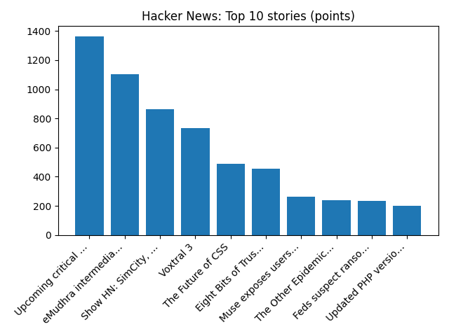

Drilling approved at controversial Jackdaw gas field in North Sea
BBC — Science
YOUR DAILY INTELLIGENCE BRIEF · 2026-10-21
Global watch: Drilling approved at controversial Jackdaw gas field in North Sea, Websites taken down across Europe ahead of critical cyber-security update.
Northern Virginia: The Connection Newspapers 2026 Voter Guide House 8 - Connection Newspapers, Salute local veterans from across Northern Virginia | Headlines - InsideNoVa.com.

Global coverage includes Drilling approved at controversial Jackdaw gas field in North Sea; Websites taken down across Europe ahead of critical cyber-security update; Peek into hidden worlds revealed by the 2026 Nikon Small World contest. Local coverage includes The Connection Newspapers 2026 Voter Guide House 8 - Connection Newspapers; Salute local veterans from across Northern Virginia | Headlines - InsideNoVa.com.

Ma-V-Elle
Ma-V-Elle is a three-piece New Zealand girl group best known for their top-40 singles in the New Zealand charts in the mid 1990s. The group consists of Lavina Williams, Marina Davis and Maybelle Galuvao.
https://en.wikipedia.org/wiki/Ma-V-Elle
New Ghosts Revealed in Cassiopeia
Runs so far today: 1